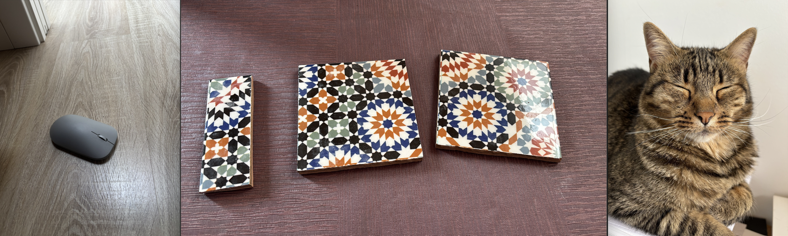
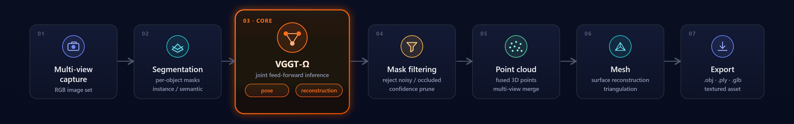
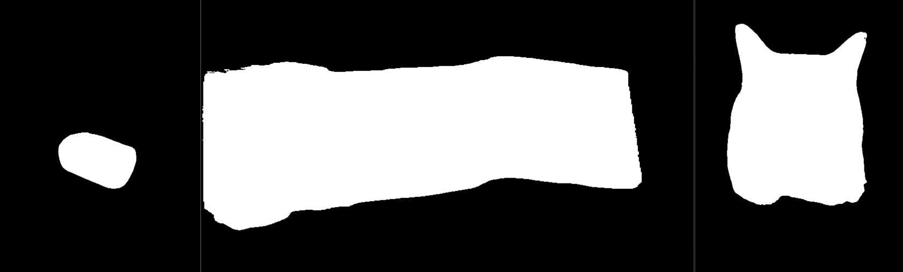
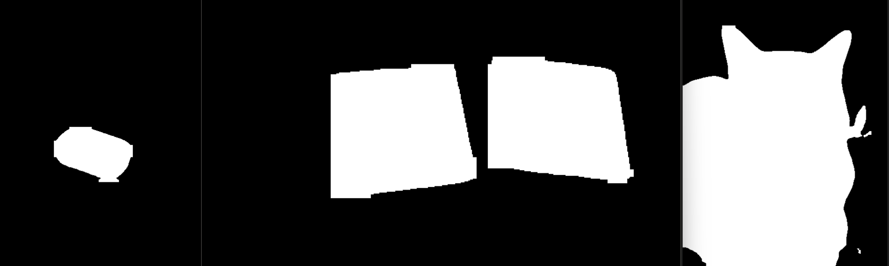
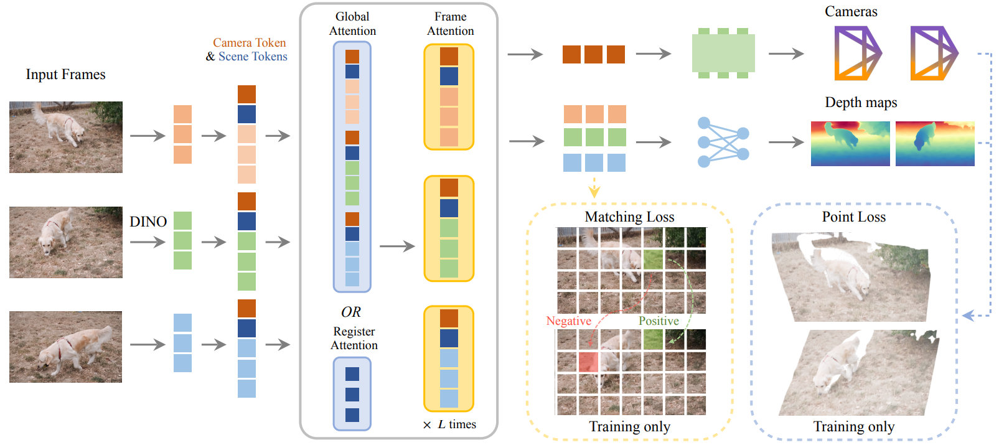

Visión general
¿Qué es Snap to 3D?
Snap-to-3D es una pipeline de extremo a extremo que convierte un puñado de fotos casuales de móvil de un objeto real en una malla 3D editable e imprimible, combinando visión por computador clásica y aprendizaje profundo.
El objetivo es hacer accesible la creación de activos 3D a cualquiera que tenga un teléfono. Aplicaciones concretas:
- E-commerce — vistas 3D de producto a partir de una sesión rápida de fotos.
- Gemelos digitales — captura de activos físicos para simulación o inventario.
- Patrimonio cultural — digitalización de objetos para su preservación y estudio.
- Impresión 3D — mallas watertight listas para laminar e imprimir.

El proceso
Cómo funciona
Las imágenes de entrada siguen dos ramas en paralelo — segmentación y reconstrucción — que se fusionan para aislar el objeto antes del mallado final.
-
01
Captura
N fotos del objeto desde distintos ángulos con el móvil (JPG, PNG y HEIC/HEIF). El fondo se conserva: aporta el contexto geométrico que la reconstrucción necesita para estimar las cámaras.
-
02
Segmentación + Reconstrucción
En paralelo: YOLO26-seg genera la máscara binaria del objeto y VGGT-Ω recupera poses de cámara, mapas de profundidad y una nube de puntos densa. La máscara anula la confianza de los píxeles de fondo y filtra la nube.
-
03
Malla 3D
PyMeshLab (Screened Poisson) convierte la nube filtrada en una malla watertight exportada como .obj / .ply / .stl, lista para Blender, motores gráficos o impresión 3D.

Los datos
Dataset: VizWiz
La etapa de segmentación se entrena con VizWiz Salient Object Detection, un dataset de fotos tomadas por personas ciegas o con baja visión.
Son capturas móviles del mundo real — con ruido, iluminación diversa, fondos desordenados, desenfoque de movimiento y encuadres descentrados — condiciones mucho más parecidas a las que nuestra pipeline debe afrontar que las de un dataset de estudio.
Las anotaciones son polígonos del objeto saliente (un JSON por
split) que rasterizamos a máscaras binarias con
cv2.fillPoly. Usamos directamente los splits
oficiales del challenge VizWiz SOD, sin re-particionar.
| Split | Imágenes |
|---|---|
| Train | 19 116 |
| Val | 6 105 |
| Test | 6 779 |
| Total | 32 000 |
Etapa 1
Segmentación del objeto
Iteramos tres arquitecturas hasta dar con la combinación adecuada de calidad de máscara y robustez.
1 · UNet desde cero. Entrenada en VizWiz con loss BCE + Dice (0.3 / 0.7), AdamW y aumentación con Albumentations a 512×512. Los resultados no fueron satisfactorios: máscaras imprecisas e inestables.
2 · U²-Net. Los bloques RSU anidados con supervisión profunda supusieron una mejora drástica: contornos mucho más limpios, aunque con errores residuales.
3 · YOLO26-seg (elección final). Fine-tuning del modelo de segmentación de instancias de Ultralytics sobre VizWiz (una sola clase, salient object). Máscaras más limpias y robustas en nuestras imágenes objetivo.
| Modelo | IoU | Dice | Precision | Recall |
|---|---|---|---|---|
| UNet (desde cero) | — | — | — | — |
| U²-Net | 0.7765 | 0.8397 | 0.8366 | 0.8987 |
| YOLO26-seg (fine-tuned) | 0.8866 | 0.9206 | 0.9057 | 0.9584 |
Métricas a nivel de píxel sobre el split de test oficial de VizWiz SOD. YOLO26-seg gana en todas las métricas (+0.110 IoU sobre U²-Net). Ambos modelos mantienen el recall por encima de la precisión: sobre-segmentan ligeramente, el modo de fallo preferible para nuestro caso de uso.


Refinado de máscaras
YOLO añade a veces detecciones secundarias espurias; U²-Net produce bordes blandos con pequeños huecos. El refinado elimina ese ruido antes de que la máscara filtre la nube de puntos.
| Enfoque | Qué hace | Resultado |
|---|---|---|
| A — YOLO ∩ U²-Net (AND) | Intersección píxel a píxel de ambas máscaras | Elimina falsos positivos, pero erosiona bordes donde los modelos discrepan |
| B — U²-Net + apertura | Máscara de saliencia + apertura morfológica | Silueta limpia, pero contornos menos precisos |
| C — YOLO + apertura | Máscara de detección + apertura morfológica (kernel elíptico 21) + mayor componente conexa | Seleccionado — bordes nítidos, ruido residual eliminado, objeto intacto |
La apertura morfológica (erosión + dilatación) elimina regiones pequeñas y puentes finos; después, un etiquetado de componentes conexas (conectividad-8) conserva solo la región de mayor área por imagen: el objeto de interés.
Etapa 2
Reconstrucción 3D con VGGT-Ω
Para poses y geometría usamos VGGT-Ω (CVPR 2026, VGG Oxford + Meta AI): un transformer feed-forward que recupera cámaras y 3D denso en una sola pasada.
Lo elegimos frente a COLMAP porque el SfM incremental es lento, frágil con capturas escasas o sin textura, y falla a menudo con fotos casuales de móvil; VGGT-Ω se mantiene robusto incluso con muy pocas vistas. A partir de la profundidad, las intrínsecas y las extrínsecas de cada vista, los mapas se desproyectan a una nube de puntos densa en coordenadas de mundo, filtrada por confianza.
| # | Etapa | Entrada | Salida |
|---|---|---|---|
| 1 | Tokenizador de imagen (DINOv3) | Imágenes RGB (N,3,H,W) | Tokens de parche por imagen |
| 2 | Agregador — atención alternada por vista y global | Tokens de parche + tokens de cámara/registro | Tokens con contexto compartido entre vistas |
| 3 | Cabeza de cámara | Tokens de cámara | Extrínsecas + intrínsecas por vista |
| 4 | Cabeza de profundidad | Features agregadas | Mapa de profundidad + confianza por vista |
| 5 | Desproyección (post-proceso) | Depth + intrínsecas + extrínsecas | Nube de puntos 3D filtrada por confianza |

De la nube de puntos a la malla
| Método | Aprendizaje | Resultado |
|---|---|---|
| Poisson (Open3D) | No | Baseline — superficies sobre-suavizadas, membranas y picos con pocas vistas |
| NKSR | Sí | No integrable a tiempo (wheels caducados, compilación CUDA desde fuente) |
| PyMeshLab (Screened Poisson) | No | Seleccionado — robusto, scriptable, instalación limpia; mallas watertight |
En acción
Demo
Galería de ejemplos en bucle. Los assets reales se añadirán más adelante.
Bajo el capó
Sistema end-to-end
Toda la pipeline se sirve como una API HTTP (FastAPI) consumida por una aplicación móvil: el usuario fotografía el objeto y recibe el modelo 3D reconstruido.
La inferencia de VGGT-Ω y la segmentación se ejecutan en paralelo sobre las mismas imágenes. El fondo se conserva durante la reconstrucción (es contexto imprescindible para estimar las poses) y el objeto se aísla después: la máscara pone a cero la confianza de los píxeles de fondo, filtrando la nube reconstruida antes del mallado. Las subidas se limitan a 32 imágenes (25 MB cada una) y la inferencia se serializa tras un lock: una única GPU compartida.
| Método y ruta | Función |
|---|---|
| POST /api/v1/inference | Sube N imágenes y ejecuta la pipeline; devuelve metadatos del job + URLs de descarga |
| GET /api/v1/jobs/{job_id}/files/{path} | Descarga un artefacto (malla, nube de puntos, PNG de depth/máscara) |
| GET /api/v1/jobs/{job_id}/archive | Descarga todos los artefactos del job en un ZIP |
| GET /health | Estado del dispositivo, CUDA y checkpoints |
| GET /docs | Swagger UI interactivo |
Especificación completa en API_SPEC.md. Configuración por variables de entorno (checkpoints, dispositivo, directorio de salida).
Balance
Conclusiones y trabajo futuro
Los baselines simples se quedaron cortos — UNet desde cero y Poisson puro rindieron poco, y NKSR no fue integrable. Cada callejón sin salida afinó el diseño final.
-
Hecho
Segmentación robusta
YOLO26-seg fine-tuned en VizWiz + apertura morfológica + mayor componente conexa (enfoque C).
-
Hecho
Reconstrucción feed-forward
VGGT-Ω recupera cámaras y nube densa en una sola pasada; filtrado del objeto vía confianza de profundidad.
-
Hecho
Mallado reproducible
PyMeshLab (Screened Poisson) produce mallas watertight .obj/.ply/.stl listas para Blender e impresión.
-
Hecho
API + app móvil
Servicio FastAPI multipart consumido por el cliente móvil; toda la inferencia pesada queda en el servidor GPU.
-
Futuro
Mallado aprendido
Reevaluar métodos como NKSR cuando el tooling madure (wheels y builds estables).
-
Futuro
Fusión máscara–nube más estrecha
Evaluar el filtrado dentro del bucle de inferencia frente al filtrado post-inferencia actual.
-
Futuro
Escala métrica
Calibración para obtener dimensiones exactas, imprescindible en impresión 3D de precisión.
-
Futuro
Latencia interactiva
Optimización hacia una captura guiada e interactiva en el propio dispositivo.
Limitaciones conocidas: la calidad depende de la cobertura de vistas y la textura del objeto (pocas vistas dejan huecos en caras no observadas); las superficies finas o reflectantes siguen siendo difíciles; y la segmentación se limita al objeto saliente, por lo que escenas muy desordenadas pueden confundirla.